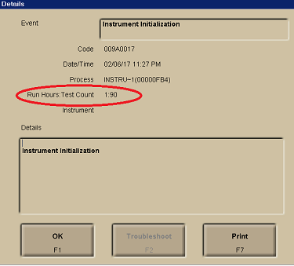

This procedure describes how to modify the run time and test counts using NVMEditor.exe.
Modify the instrument run time and test count only when replacing or reimaging the AU hard drive has reset the run time and test count.
Note: The run time and test count information must be recorded prior to performing this procedure. The information can be found in the user interface's latest event log details box. The run time from the event log is in hour and must be converted to second. For example, 7 hours = 3600 seconds × 7 = 252,000 seconds.

-
Modify the run time and test counts.
-
Connect to the AU.
- If the operating system is Windows XP or Windows 8, then use Desktop Sharing or Remote Desktop Connection to connect to the AU.
-
Terminate the
AUObj.exe program.
- For Windows XP:
- To exit the
AUObj.exe, right click on the
AUObj icon (small Y-shaped icon on lower right corner of the screen), and then select
Exit.
- For Windows 8:
- Right click on the task bar and select
Task Manager.
- In the
Task Manager box, click on
Processes, select
AUobj Module, and click on
End Task in the bottom corner of the box.
- Exit or close the
Task Manager box.
-
Navigate to the
AU folder and find
NVM Editor application.
- For Windows XP:
- Double-click the
Windows Explorer icon on the AU desktop and select
. Double-click to launch the
NVMEditor.exe program.
- For Windows 8:
- Double-click the
File Explorer folder icon on the task bar or
Computer icon on the AU desktop, select
Local Disk (C:) > AU and open the
NVMEditor.exe program.
-
Select
Open NVM in the
NVM Editor window. The default File name is nvm0.
-
Select
Open. After few seconds, a
NVMemory window is displayed. Select
[+] to expand
m_RuntimeMemory.
-
Select the numeric value on the right side of
m_dwTotalTestSeconds. Enter the desired run hours in seconds, and then select
Enter.
For example, 7 hours = 3600 seconds × 7 = 252,000 seconds.
Note: The run hours on the console event log are rounded to the nearest hour.
-
Select the numeric value on the right side of
m_ITestNumber. Enter the desired test counts, and select
Enter.
-
When you are finished, select
Exit.
Note: You do not need to save these values. The changes are updated when the program is exited.
-
Double-click on the
AUObj.exe icon (large Y) to launch AUObj.exe.
-
Verify the run time and test counts.
-
Toggle back to the console user interface by minimizing the window.
-
Select the
Event log icon on the
Main Menu.
-
Highlight the most recent event.
-
Select
Details.
-
Verify that the run hours and test counts are updated to the desired run time and test counts.
- If the run hours and test counts are incorrect, then initialize the system through the console PC. When initialization is complete, check for the updated values.
- If the run hours and test counts are still incorrect, repeat the entire procedure (Modifying Run Time and Test Counts).
-
Return to the AU desktop or close the AU desktop connection. Refer to
Software: Using Desktop Sharing Between Console PC and AU procedure.